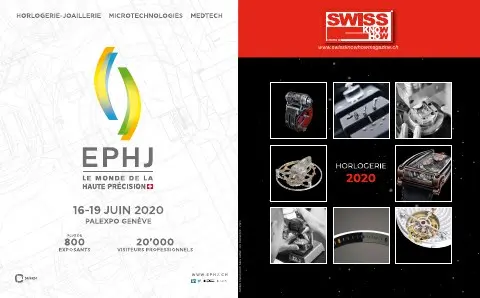

En bref
Numéro un suisse des microscopes et des systèmes de mesure optique, Ryf AG, basée à Granges, fournit fabricants de montres et de composants, industrie, technique médicale, sciences de la vie et enseignement. Son directeur général Daniel Ryf explique que les clients sont conseillés sur place, par téléphone ou dans un showroom unique en Suisse présentant environ 150 microscopes numériques, stéréoscopiques, de mesure ou électroniques. Le service d’entretien et de réparation, que l’entreprise dit seule à offrir en Suisse, occupe un tiers de ses 30 collaborateurs, s’appuie sur un stock de 20’000 articles et assure étalonnages et maintenance sous contrat. De nombreux microscopes sont développés à l’interne pour l’horlogerie, avec un fort accent sur l’ergonomie. La numérisation, entamée il y a vingt ans, s’oriente vers des caméras Full HD ou 4K et la visualisation 3D. L’entretien est publié en français et en allemand.
« Nos produits sont développés pour offrir les meilleurs équipements au monde, parfaitement adaptés aux besoins spécifiques de l’industrie horlogère. »— Daniel Ryf
L'interview intégrale
Monsieur Ryf, Ryf AG est le numéro un en Suisse des microscopes et des systèmes de mesures optiques. Comment votre entreprise présente-t-elle sa gamme de produits et services ?
Nous couvrons tout le spectre pour les fabricants de montres et de pièces d’horlogerie, pour l’industrie et la technique médicale. Sans oublier les sciences de la vie, la formation et l’enseignement dans les lycées et universités.
Techniques de mesure optique, stéréomicroscopes, microscopes dentaires, microscopes numériques : Ryf AG offre un vaste choix. Comment le client peut s’y retrouver ?
Nous l’aidons à trouver la bonne solution en collaboration avec nos partenaires. Nous conseillons nos clients sur place, par téléphone ou dans notre vaste showroom à Granges. Dans cet espace de démonstration unique en Suisse, nous pouvons leur présenter près de 150 différents microscopes numériques, stéréoscopiques, de mesure, pour matériaux ou REM (microscopie conventionnelle à réflexion).
Quelle place occupe votre service d’entretien et de réparation ?
Il joue un rôle essentiel. Nous sommes la seule entreprise en Suisse à offrir ce service. Il représente à lui seul un tiers de nos 30 collaborateurs, qui peuvent se déplacer rapidement dans toute la Suisse pour assister le client sur place. Nos spécialistes disposent d’un stock de 20 000 articles et veillent à ce que les clients bénéficient de la même qualité d’accompagnement après l’achat. Ils vous offrent la garantie d’une réparation rapide ou d’une mise à disposition immédiate d’un équipement de remplacement dans les autres cas.
Les microscopes et systèmes de mesure nécessitent-ils beaucoup d’entretien ?
Pour les entreprises responsables, l’étalonnage régulier des appareils et des systèmes selon les normes en vigueur est une évidence. Il exige toutefois de vastes connaissances spécialisées et beaucoup d’expérience ; c’est pourquoi nos clients font alors appel à nos services. Dans la plupart des cas, nos spécialistes se chargent sur site de l’entretien, du nettoyage et du calibrage dans le cadre d’un contrat de maintenance et peuvent fournir des rapports d’essai sur demande.
Avec son siège à Granges, Ryf AG a toujours été un partenaire incontournable de l’industrie horlogère. Qu’est-ce qui rend cette collaboration si intéressante ?
Je voudrais insister ici sur l’importance de la coopération. Nous travaillons en étroite collaboration avec de nombreux fabricants du secteur et nos produits sont développés pour offrir les meilleurs équipements au monde, parfaitement adaptés aux besoins spécifiques de l’industrie horlogère. De nombreux microscopes sont le fruit de développements internes adaptés aux besoins de l’industrie en termes de matériel, de logiciels et d’exigences ergonomiques. Ces applications spécifiques sont également développées dans notre siège de Granges.
Les exigences ergonomiques sont aussi importantes que les exigences techniques.
Exactement, car seuls des postes de travail et des processus ergonomiques permettent un travail efficace, sûr et avec moins de fatigue pour l’opérateur. Nos microscopes pour poste de travail sont donc parfaitement adaptés sur le plan ergonomique. Les microscopes stéréoscopiques ergonomiques pour un travail sans fatigue sont très confortables. Des zooms spéciaux pour les solutions à très grand champ de vision rendent eux aussi le travail plus ergonomique et efficace.
La numérisation a débuté très tôt dans votre industrie et votre entreprise s’est adaptée en conséquence. Quelle direction prennent les développements actuels ?
La numérisation a effectivement commencé il y a vingt ans dans le domaine de la microscopie et des systèmes de mesure optiques. Nos microscopes numériques de qualité à grande profondeur de champ sont conçus pour l’ensemble du travail d’inspection, de documentation, de co-observation et d’analyse.
Aujourd’hui, les microscopes numériques – avec ou sans oculaires – sont omniprésents. Une camera numérique haute résolution avec résolution Full HD ou 4K vient remplacer les oculaires. L’image s’affiche sur un écran, ce qui contribue aussi à améliorer l’ergonomie du poste de microscopie. La tendance est clairement à la visualisation 3D avec une perception de la profondeur jusqu’à présent impossible avec un simple écran. C’est ensuite la résolution 4K qui viendra s’imposer sur le marché.
Texte paru dans Swiss Knowhow – Horlogerie 2020, p. 28-29.
Personnes citées
- Daniel RyfDirecteur général

Paru dans
Swiss Knowhow – Horlogerie 2020
2020 · page 28-29 · article original en français
Lire l'article complet PDF